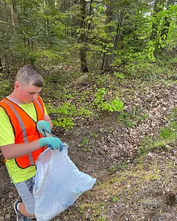
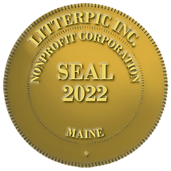
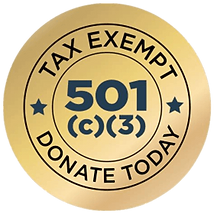

Donations are the lifeblood of LitterPic, allowing us to continue our
work towards a world free of litter. Your contributions go directly
towards supporting our efforts to inspire and empower people to act
against litter, making a tangible impact on the health of our planet.
Your donations help us maintain and improve our platform, ensuring it
remains user-friendly, secure, and up-to-date. We also use donations to
purchase essential litter-picking equipment, including grabbers, bags,
and gloves, that enable our volunteers to pick up litter safely and
effectively.
Your generous donations enable us to make a real difference in the fight
against litter. With your support, we plan to organize and fund events
that bring together volunteers from all walks of life to clean up our
communities and make them more beautiful, safe, and healthy places to
live.
In addition to supporting our future litter-picking events, your
donations help us maintain our status as a registered nonprofit
organization and pay nonprofit dues. This ensures that we can continue
to operate as a legitimate and effective force in the fight against
litter.
At LitterPic, we believe that every dollar counts and appreciate any
support we receive from our community. We are committed to using your
donations efficiently and effectively to achieve our mission of
abolishing litter worldwide. Together, we can make a lasting impact on
the health and well-being of our planet.
Help support the mission of a cleaner environment!
If you would like to talk about how you can volunteer or have a project we
can help with, please email or give us a call. We look forward to hearing
from you!